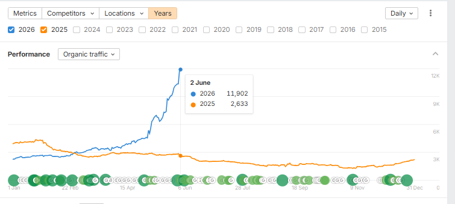
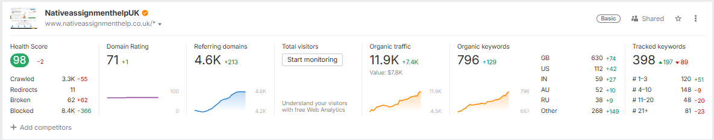
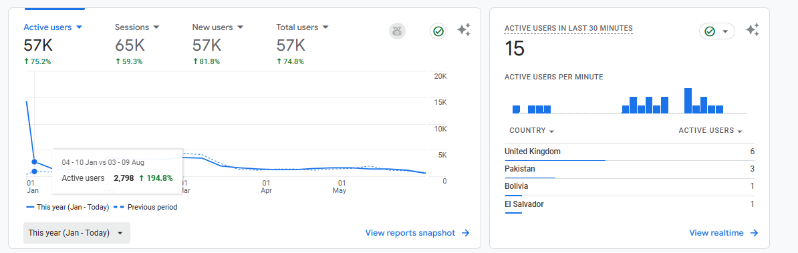
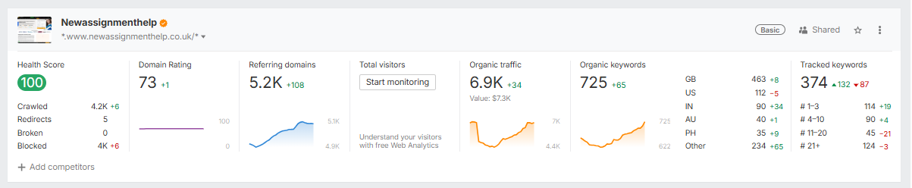
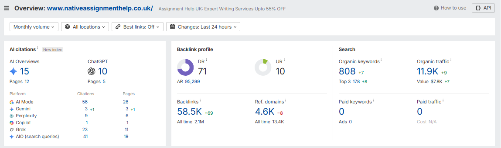

☕ Now Brewing: SEO Growth
I can help you with |
A Senior SEO Executive with 3+ years of experience growing organic visibility for content and service websites in the UK and beyond — most recently driving 352% organic traffic growth and earning citations across Google AI Overviews, ChatGPT & Gemini for a live client.
Senior SEO Executive
☕ Real Results for Real Websites
% Organic Traffic Growth
Domain Rating Achieved
+ AI Search Citations Earned
+ Years of Experience
About Me
I'm Avdhi Jain, a Senior SEO Executive with 3+ years of hands-on experience growing organic visibility for content and service websites. My recent work with NativeAssignmentHelp.co.uk grew monthly organic traffic by 352% (2,633 → 11,902 sessions), pushed Domain Rating to 71, and lifted GA4 active users by 75% year-over-year — while also earning 117+ real citations across Google AI Mode, Google AI Overviews, ChatGPT, Grok, Perplexity & Gemini.
That last part matters more every month: search is shifting from ten blue links to AI-generated answers, and I build SEO strategy that shows up in both — clear reporting, measurable KPIs, and honest, white-hat execution, for clients anywhere in the world.
What I Do
From technical foundations to authority and content — I handle every layer of your organic growth strategy.
Strategic ROI Impact: Removes the technical bottlenecks that silently cap your rankings, so every other SEO effort actually compounds.
Strategic ROI Impact: Builds the domain authority needed to outrank established competitors in competitive niches.
Strategic ROI Impact: Captures high-intent local and regional searches so you're visible exactly where your customers are.
Strategic ROI Impact: Positions your site as the go-to answer in your niche, driving compounding organic traffic over time.
Strategic ROI Impact: Gives you full visibility into what's working, so every dollar spent on SEO is accountable.
Strategic ROI Impact: Puts your brand inside AI-generated answers — on one live client, this earned 41+ citations across ChatGPT, Google AI Overviews, Gemini & Perplexity.
How I Work
Deep technical audit + competitor & keyword research to find quick wins and long-term opportunities.
A prioritized 90-day roadmap aligned with your business goals — not vanity metrics.
Hands-on implementation: on-page fixes, content, technical changes, and link building.
Monthly performance reports with clear next steps — always tied back to ROI.
Case Studies
Real client data, pulled straight from Ahrefs & Google Analytics.
NativeAssignmentHelp.co.uk grew from 2,633 to 11,902 monthly organic sessions, with Domain Rating climbing to 71, a 98 site Health Score, and 796+ ranking keywords — including 178 in the top 3.


Starting from a flat ~2.6K monthly organic sessions, a full technical cleanup, content strategy overhaul, and sustained link building (now 58.5K backlinks from 4.6K referring domains) took the site to 11,902 sessions/month — a 352% increase, worth an estimated $7.8K/month if bought as paid traffic. GA4 confirms it: 57K monthly active users, up 75% year-over-year, with Organic Search now a top acquisition channel. Rankings span 5+ countries (UK, US, India, Australia, Russia), and the site earns 117+ real citations across Google AI Mode, Google AI Overviews, ChatGPT, Grok, Perplexity & Gemini — visibility that goes beyond classic blue links.

NewAssignmentHelp.co.uk runs a fully clean technical foundation — zero broken pages — while scaling organic keywords and referring domains month over month.

A technical-first approach — zero broken pages, zero blocked resources — kept crawl health at a perfect 100. Ongoing link building brought referring domains to 5.2K (Domain Rating 73), while content and keyword targeting grew organic keywords to 725+, driving 6.9K+ monthly organic sessions worth an estimated $7.3K in equivalent ad spend. Rankings span 5+ countries, led by the UK, US, India, Australia & the Philippines.
Beyond Blue Links
Real AI citation data for NativeAssignmentHelp.co.uk — proof that the content ranks with AI assistants, not just Google.
117+ total AI citations tracked across 6 platforms — Sept 2026 snapshot.

Tools I Use
FAQ
You work directly with the person doing the strategy and execution — no account managers, no juniors learning on your budget. That means faster communication and full accountability for results.
Yes — I currently work with UK-based websites and I'm actively taking on clients across the US, UK, Canada, and Australia. I'm comfortable working across time zones and communicating via email, WhatsApp, or scheduled video calls.
Early technical wins can show up in 4–6 weeks, but meaningful, compounding organic growth typically takes 3–6 months, depending on your site's current authority and competition level.
A review of your site's technical health, top opportunities, and a short call to walk through what I'd prioritize first — no obligation to work together afterward.
No ethical SEO practitioner can guarantee specific rankings — Google's algorithm isn't controlled by anyone. What I do guarantee is a transparent, white-hat process and monthly reporting so you always see the work and its impact.
Pricing depends on the scope of work — typically a monthly retainer or project-based fee. We'll figure out the right fit together after the free audit call, once I understand your site and goals.
Let's Work Together
Tell me a bit about your business and goals — I'll get back to you within 24 hours with an honest take on how SEO can help you grow.